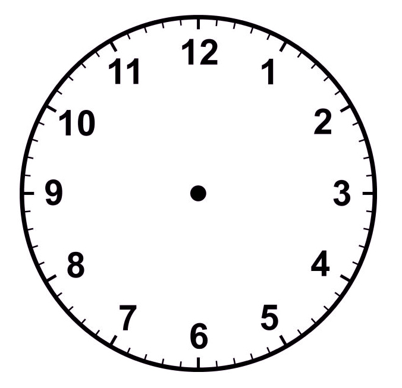

<div class="clock">
  
  <div class="clock-hand hour-hand" [ngStyle]="{'transform': 'rotate('+ hourDegrees +'deg)'}"></div>
  <div class="clock-hand minute-hand" [ngStyle]="{'transform': 'rotate('+ minuteDegrees +'deg)'}"></div>
  <div class="clock-hand second-hand" [ngStyle]="{'transform': 'rotate('+ secondDegrees +'deg)'}"></div>
</div>